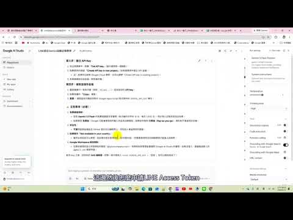

Threads｜蔡明和：用 LINE、Google Apps Script 與 Gemini 打造 AI 智慧記帳小幫手

一句話摘要
把日常記帳入口放進 LINE：文字輸入或拍攝收據後，由 Google Apps Script 接收 webhook、Gemini 解析內容，再把結構化欄位追加到 Google Sheets。
來源脈絡
Threads 使用者蔡明和（@imingho）分享一篇 2026 年 9 月 12 日發布的完整教學，主題是「把 LINE 變成智慧記帳小幫手」。Threads 貼文連到原始 Blogger 文章，文章可正常讀取，並包含架構說明、準備步驟、錯誤排除與實測案例。
原文採用 Gemini 1.5 Flash 作為範例模型。這應視為教學當時的實作選擇，不代表現在仍是最佳或仍可用的模型名稱；實際部署前應查閱 Gemini 官方模型清單並測試 API 版本。
核心架構
- 使用者在 LINE 官方帳號或聊天室傳送文字消費紀錄，或上傳發票、收據照片。
- LINE Messaging API 將事件送到 Google Apps Script Web App 的 webhook。
- Apps Script 將文字或影像交給 Gemini API，擷取日期、收支類型、分類、項目、金額、付款方式、記帳時間與備註。
- Apps Script 將結果追加到 Google Sheets。
- 使用者收到即時回覆，確認記帳結果或得知錯誤後稍後重試。
教學中使用的資料欄位
文章建議試算表第一列建立：
日期｜分類（收／支）｜項目｜金額｜付款方式｜記帳時間｜備註
除了逐筆資料，還可以建立第二張統計分頁，以公式彙整餐飲、水電、交通、醫療等類別的月度收入與支出。
文章整理出的實作重點
### 文字與照片雙入口
文字可使用「買早餐 80 元」這類自然語句；照片則交給 Gemini 進行文字辨識與欄位抽取。這比固定格式表單更適合隨手記帳，但模型輸出的欄位仍必須經過型別、金額與日期驗證。
### 模型錯誤排除
原文提到遇到 404 或 Model Not Found 時，可用 ListModels API 檢查 API 金鑰目前可用的模型，再更新程式中的模型名稱。這是比持續猜測模型名稱更可靠的排錯方式。
### 繁忙與重試
免費或共享額度可能遇到 HTTP 429、503 或高需求狀態。教學建議將底層錯誤轉成使用者看得懂的提示，例如稍後重試；正式版還應加入指數退避、重複事件去重與失敗紀錄。
### 日期與付款方式
模型可能出現年份偏差，因此 prompt 應動態帶入當前日期。付款方式也可擴充為現金、信用卡、LINE Pay、iPASS Money 等，但程式端仍應限制可接受的枚舉值，避免自由文字造成統計分裂。
交叉驗證與官方文件
- LINE 官方文件說明 Messaging API 的接收訊息與 webhook 流程：
https://developers.line.biz/en/docs/messaging-api/receiving-messages/
- Google Apps Script Web Apps 官方文件：
https://developers.google.com/apps-script/guides/web
- Gemini API 官方入門文件：
https://ai.google.dev/gemini-api/docs/quickstart
- Gemini 官方模型清單：
https://ai.google.dev/gemini-api/docs/models
官方文件可確認整體整合方向，但不會替這篇第三方教學保證完整程式碼、目前模型名稱、配額或所有錯誤處理都已符合生產環境需求。
導入檢核表
- LINE Developers 建立 Messaging API Channel，開啟 webhook，並關閉會干擾機器人的自動回應。
- 不要把 LINE Channel Access Token 或 Gemini API Key 寫死在公開程式碼、前端或試算表儲存格；使用 Apps Script Properties 或等效的秘密管理方式。
- 驗證 LINE webhook 的簽章，並限制可使用機器人的 LINE 使用者、群組或官方帳號範圍。
- 以結構化 JSON schema 或嚴格欄位驗證檢查 Gemini 輸出，特別是金額、日期、收支方向與付款方式。
- 對同一個 LINE event ID 做去重，避免 webhook 重送造成重複記帳。
- 發票與收據可能包含姓名、地址、醫療或消費資訊；設定最小保存期限、試算表權限與備份政策。
- 確認 Gemini API 的資料使用、保留與區域政策，避免把不應外傳的敏感影像送到第三方服務。
- 針對 429、503、網路逾時與模型不可用建立重試、告警及人工補登流程。
- 部署前查閱官方模型清單，不要直接複製教學中的舊模型名稱。
- 先在測試用 LINE Channel 與去識別化收據上驗證，再連接真實帳務資料。
適合的延伸場景
- 家庭或個人日常支出快速記錄。
- 課程、活動或小型團隊的費用彙整。
- LINE 入口的簡易庫存、報修、採購或表單資料收集。
- 以 Gemini 做欄位抽取，再由 Google Sheets 進行低成本報表與通知。
風險與限制
這類系統的難點不只是把 API 串起來，而是帳務資料正確性與個資治理。AI 可能誤讀模糊發票、把含稅金額判錯、漏掉折扣，或將收入與支出方向弄反；任何需要報稅、報帳或正式財務用途的資料，都應保留人工覆核與更正紀錄。LINE、Google Apps Script、Gemini 與 Sheets 的配額、模型、費用及政策也會變動，正式使用前應重新檢查。
原始連結
Threads 分享：
https://www.threads.com/share/_w7qCbSd4/
Threads canonical：
https://www.threads.com/@imingho/post/DdNH8YAgcSq
原始教學：
https://skill-bestdaylong.blogspot.com/2026/09/line-google-apps-script-gemini-ai-google.html